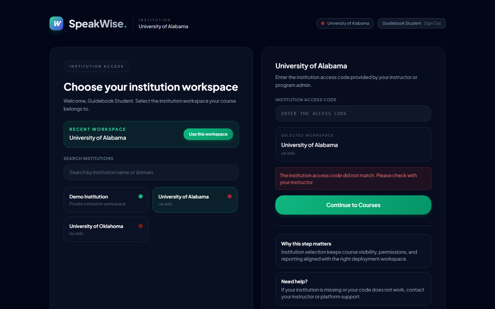
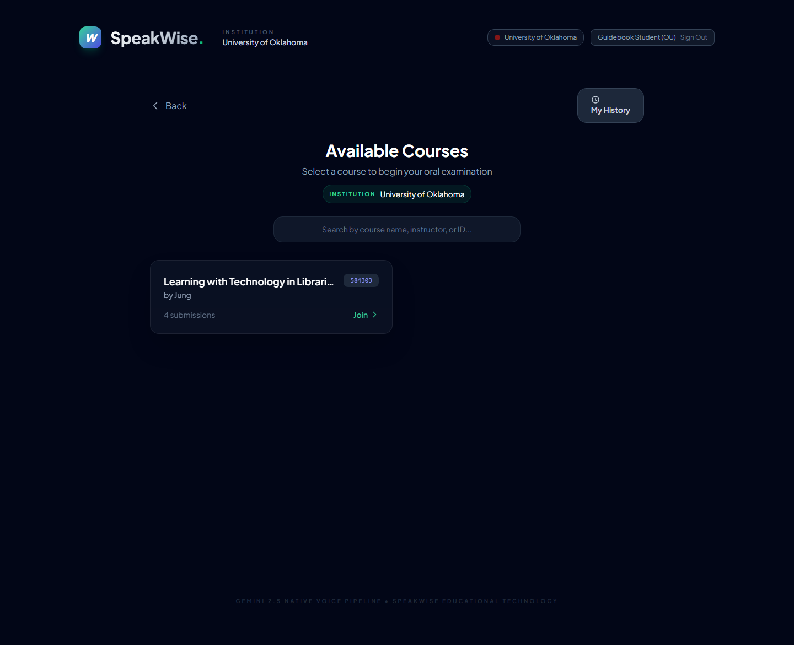

SpeakWise — Student Guide
Audience: Students taking an oral interview on SpeakWise. What you'll need: a laptop or desktop with a working microphone, a quiet space for 5 to 10 minutes, and the institution access code and course passcode your instructor gave you.
🎬 Narrated video tutorial (≈2 min): student-tutorial.mp4 — the full student journey with voice guidance and an on-screen cursor.
1. What is SpeakWise, and what will I actually do?
SpeakWise is a voice-driven AI oral interview platform. Your instructor sets up a topic, and an AI interviewer called "Dr. SpeakWise" asks you four to five questions out loud. You answer by speaking, and the system transcribes your answers automatically. When the interview ends, you get a score and personalised feedback right away.
It's not a one-way exam — it's a conversation. If you get stuck, the AI will offer a graduated hint. You don't need to panic if you don't know the answer.
2. Signing in
2.1 The landing page

Visit the URL your instructor shared (for example https://speakwise-oral-exam.vercel.app/). You'll see two big buttons.
- Student Workspace — this is you.
- Instructor Workspace — for faculty and assistants. Don't click it.
2.2 Create an account or sign in
First time here? Switch the form to sign-up mode.

Sign-up needs:
- Email (use one you check regularly)
- A password you'll remember
- Your display name
- Role: Student
- Your institution from the dropdown (e.g. University of Alabama)
After signing up you'll be logged in automatically.
Already have an account? Just enter your email and password. If you forgot your password, ask your instructor — automated password reset isn't available in this deployment.
3. Institution access code
The first time you sign in you'll see the institution access gate.

- A list of institutions appears on the left. Click your school.
- A box titled "ENTER THE ACCESS CODE" appears on the right.
- Type the code your instructor shared (all caps — for example
ROLL2025). - Click Continue to Courses.
Don't have a code? Ask your instructor or teaching assistant. SpeakWise only shows courses inside an institution you can prove you belong to — you can't skip this step.
The code is remembered on your device, so you won't be prompted again next time.
4. Finding your course
Once inside, you'll see a list of available courses.

Each card shows the course name, instructor, and submission count. Click the one you're joining.
5. Joining an interview — passcode + microphone test
Clicking a course opens a join screen.

- Your Full Name — used in the report your instructor sees.
- Entry Code — the course passcode (not the same as the institution access code).
- Microphone test — click the test button and speak; confirm that audio is being captured.

Mic not working?
- Click the lock icon in your browser's address bar → set Microphone to Allow.
- macOS: System Settings → Privacy & Security → Microphone → turn on for your browser.
- Close other tabs that might be holding the mic (Zoom, Teams, etc.).
When the mic is confirmed, the Start Interview button activates.
6. How to handle the interview
6.1 The first moment
When you press Start Interview, the AI speaks first:
"Hello there! I am Dr. SpeakWise, and I'll be your examiner today…"
It introduces itself, breaks the ice with a simple question, then moves into four or five substantive questions, and ends with a closing line.
6.2 How to answer
- Speak naturally. You don't need to form perfect sentences.
- Aim for 30 seconds to a minute per answer rather than a single line — the rubric rewards depth.
- Use concrete examples. A single sentence starting with "For example…" usually lifts your score.
- Be ready for follow-ups. The AI often asks "Could you explain why?" Prepare a quick rationale.
- Pause ~3 seconds when finished. The system uses silence as the signal to switch turns.
6.3 When you're stuck — the hint ladder
If you don't know, the AI offers three levels of scaffolding automatically:
- Level 1 — conceptual hint: "What's the main characteristic of X?" (no answer revealed)
- Level 2 — example hint: "Consider a situation where… what happens?"
- Level 3 — decomposed sub-question: breaks the original prompt into smaller pieces.
If you still can't answer after level 3, the AI gracefully moves on. Not knowing is not a penalty by itself — the attempt is scored, but silence is not. Keep talking.
6.4 Is interrupting the AI okay?
Yes. If you start speaking while the AI is talking, it's logged as a barge-in event. Barge-ins are generally read as confidence signals and tend to help your engagement score. That said, try to hear the full question the first time so you don't miss context.
6.5 Which language?
Either English or Korean is fine. The AI follows your language lead. Mixing is also handled.
6.6 Ending the interview
Most interviews end automatically after the fourth or fifth question. You can also end early by clicking End Interview. When you end:
- Your full transcript is sent to Gemini for evaluation (~10–20 seconds).
- A score, feedback, and rubric breakdown are computed.
- You land on the results view.
7. Understanding your results
| Section | What it means |
|---|---|
| Score | A 0–100 number plus a mastery level (with emoji). |
| AI Feedback | Three to five sentences summarising strengths, gaps, and suggestions. |
| Rubric (four axes) | Conceptual / Communication / Critical Thinking / Engagement, each on 0–25, with the AI's quoted evidence for each. |
| Reasoning Quality | Explicit Justification, Causal Explanation, Counter-Argument Handling, Abstraction — linguistic patterns the system detected. |
| Concept Map | A network of concepts extracted from your answers. Clicking a node highlights the transcript line that produced it. |
| Transcript | The full back-and-forth you had with the AI. |
7.1 Replaying your own interview
The Concept Map has a Timeline playback control. Pressing play rebuilds the graph turn by turn — you can literally watch where you made a claim, where you supported it with evidence, and where you jumped without backing it up.
Keyboard shortcuts:
←/→— step back or forward one turnSpace— play or pauseHome/End— jump to the first or last turn
7.2 Saving the report
- Print report button → print to PDF → save. You can paste it into a portfolio or a reflection journal.
- Or just bookmark the page URL — you can reopen any past session from the View My History menu.
8. History — revisiting earlier sessions
The side menu has a View My History link that shows every session you've completed, newest first. Useful if you took the same course more than once, or if you're across multiple courses.
Whether you are allowed to retake a course depends on your instructor. If retakes are allowed, every attempt saves as a new submission.
9. Common worries
"What if the AI mishears me?"
Speech recognition is good but not perfect. You can inspect the transcript on the results screen. If a mis-hearing was significant, tell your instructor — they can override the score manually.
"The mic cut out midway."
For now a network interruption ends the session (improving this is on the roadmap, Track R3). Prefer a wired or stable Wi-Fi connection during the interview. If it does drop, reach out to your instructor immediately and ask for a retry.
"Why was my score low?"
Usually one of:
- Answers were too short — under ten seconds tends to score near zero on rubric dimensions.
- No explicit justification or examples — lacking "Because…" or "For example…" hurts Causal Explanation and Explicit Justification.
- Follow-ups answered only "yes" / "no" — Engagement drops sharply.
- Topic drift — Conceptual Understanding drops when answers go off-topic.
"I realised I said something wrong"
You can't rewind, but you can course-correct on the next turn: "Wait, earlier I meant to say…" The system reads this as self-correction, which is positive for the Counter-Argument Handling dimension.
10. Research participation notice
If this course is part of a study (e.g. an IRB-approved self-regulated learning study), your instructor will give you a separate consent form. Personal identifiers are only used as research data with your consent. Questions go directly to the instructor or the study's PI.
This guide is kept in sync with the app by re-running node playwright/capture.mjs and node playwright/capture-extra.mjs.